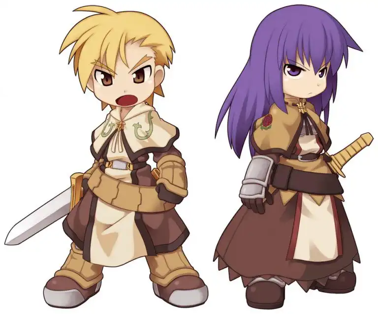

แนวทางการเล่น
ก่อนอื่นหากว่าใครที่พึ่งเคยสัมผัส Ragnarok Online อาจจะงงว่าอาชีพมันทำไมมีต่อยอดด้วย ก็จะมาอธิบายกันตรงนี้ก่อนน้า โดยแรกเริ่มเดิมที
อาชีพจะเริ่มจากผู้ฝึกหัดหรือ Novice ที่ยังไม่มีอาชีพอะไรก่อน จากนั้นเมื่อเก็บ Job level ถึง 10 ก็จะสามารถเลือกสายอาชีพขั้นต้นต่อได้
ประกอบไปด้วยสายอาชีพหลัก 6 อาชีพและอาชีพพิเศษอีก 3 อาชีพ p>เมื่อเลือกสายอาชีพขั้นต้นแล้ว ก็จะเก็บเลเวลต่อไปเพื่อไปเป็นอาชีพขั้นสอง
ซึ่งเกือบทุกอาชีพจะแยกออกไปเป็นสายย่อยอาชีพละ 2 สาย มีความแตกต่างกันไป (โดยมากจะเน้นไปทางด้านเดิมหรือสนับสนุนการเล่นแบบ PvP หรือกิลวอร์มากขึ้น)
